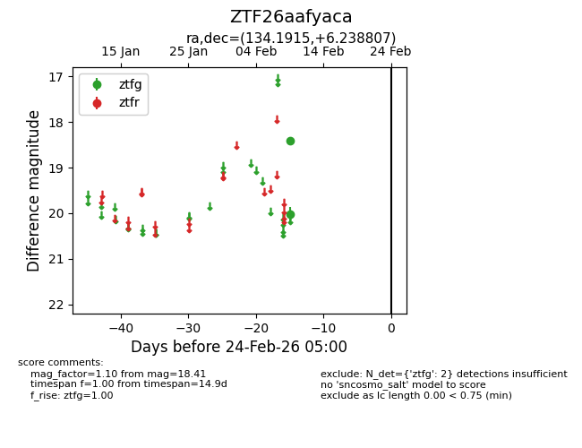
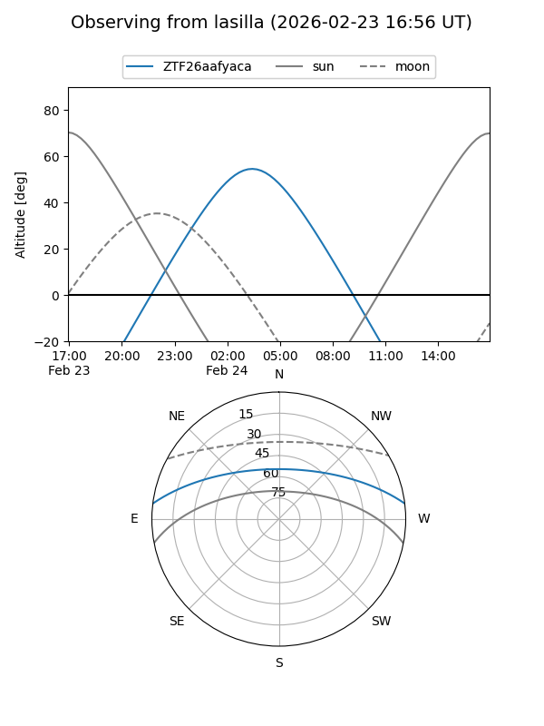
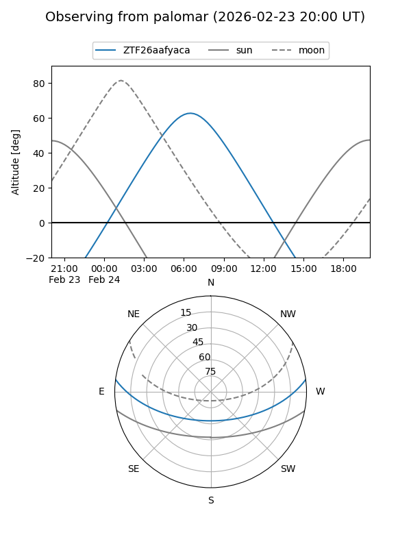

ZTF26aafyaca
Target ZTF26aafyaca at 2026-02-24 09:08
Aliases and brokers:
FINK: link
Lasair: link
ALeRCE: link
alt names
ZTF26aafyaca (ztf,fink_ztf)
Coordinates:
equatorial (ra, dec) = 134.1915,+6.23881
equatorial (HMS+DMS) = 08:56:45.95,+06:14:19.70
galactic (l, b) = (222.2280,+30.63734)
Flags:
Photometry:
last ztfg=18.41
2 ztfg detections
Lightcurve

Visibility


Additional plots